就職先として最終的に
北陸電力を選んだ理由は？
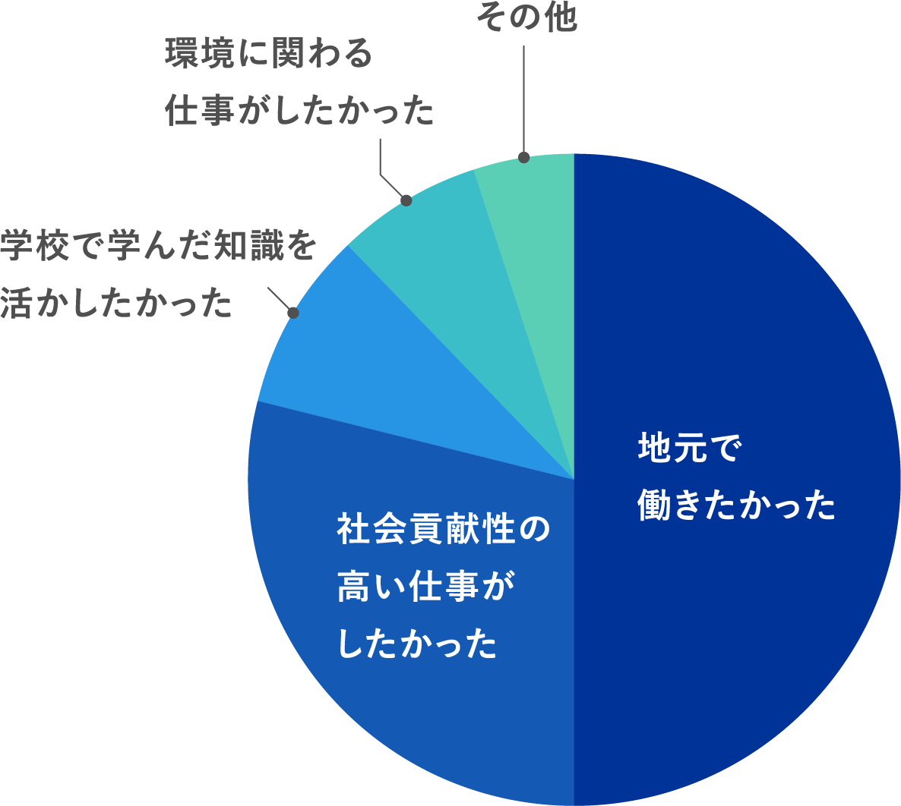
新入社員の多くが地元である北陸地域での就職を希望し、その中でも社会を支えるインフラ企業である北陸電力を選び「社会貢献性の高い仕事がしたかったから」という意見が多くありました。その他にも大学・大学院で学んだ専門知識・技術を活かせる仕事がしたいという意見や環境問題に貢献できる仕事を選んだという意見もありました。
新入社員の回答紹介
-
- 私が就職活動時に設けた、公共に携わる仕事、地域活性化に貢献できる仕事、自らが成長できる環境がある仕事という3つの軸に当てはまると考えたからです。
- 大学で真空遮断器の研究を行っており、電力分野について触れる機会が多かったのですが、その中で、私たちが当たり前に使用している電気は様々な努力や工夫によって安定供給されていることを知り、是非そのような仕事をしたいと思いました。生活に無くてはならない電気に係わる仕事に就くことで、大きな責任とやりがいのある仕事ができると考え当社を選びました。
-
- 北陸電力は他の電力会社と異なり設立に至るまでに独特の歴史があったこと、地域社会・風土に最も密着していると感じたことが入社の決め手となりました。
- 仕事の幅広さ。他の電力会社と比較して事業規模は小さいが、その分一人ひとりが受け持つ仕事の範囲が幅広く、様々な仕事をすることができることに魅力を感じました。
- 北陸地域の方々との信頼関係の厚さと技術力を兼ね備えた北陸電力の社員の一員になりたいと思い、志望しました。
入社前と入社後で
北陸電力に
対する
イメージの変化は？
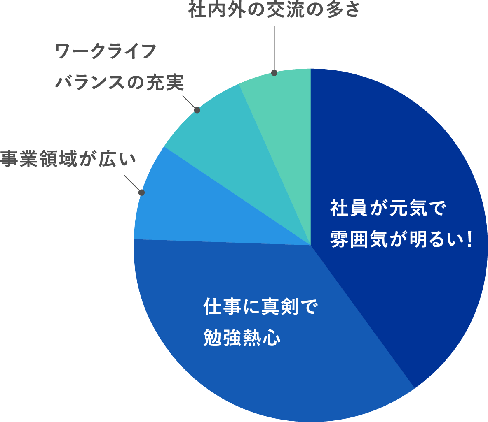
入社前のイメージとして「堅い会社だと思っていた」という意見が多くあり、入社後にそのイメージが変わった社員も多かったようで先輩や上司と共に仕事をしながら、そのイメージは変化したようです。また仕事に対する姿勢や社員の成長を支援する制度など、教育・研修制度の充実に驚いたという声もありました。入社後に改めて北陸電力の事業活動範囲の広さに驚いたという社員もいました。
新入社員の回答紹介
-
- 変化というよりは新たに感じたことですが、会社や仕事に誇りを持っている方が多くおられるということです。
- 入社前は事務作業が多いイメージがありましたが、実際には山奥の道なき道を歩いたり鉄塔を昇ったりと、現場作業も多く、頭も体も使えるバランスのとれた仕事だと思います。
- 当社は北陸の中でも比較的大きい企業であるため、入社前は厳格な雰囲気の中で決められた仕事を淡々とこなすようなイメージを持っていたのですが、実際は入社したばかりの新入社員の意見にも耳を傾けてくれる温かい職場で、日々社会人としての成長を実感できます。
- 社内での仕事が多いと思っていましたが、お客さまの所に訪問する機会が多く、外に出る機会が多いことです。
- 先人の方々が積み重ねられてきた技術が膨大であり、まずそれらを把握・理解することが求められ、さらにその先を目指すことも求められる。技術者としてやりがいを感じることができる。
-
- 先輩社員の方々が昼夜問わず、懸命に働く姿を目の当たりにし、一人ひとりがお客さまの生活を守るため、責任を持って業務に取り組んでいることがわかりました。
- 研修後、すぐに一人前の仕事が任せられることには驚きました。プレッシャーを感じることもありますが、もちろん上司・先輩方のフォローもしっかりしており、一人ひとりの社員を大切にする会社だと改めて実感しました。
- 先輩社員や同期と交流を深めていくうちに、仕事のオンとオフの切り替えが上手な人たちばかりで、ワーク・ライフ・バランスを実現できる働きやすい企業だと思います。
- 入社する前は真面目で、保守的な人が多いと考えていました。しかし、入社後は柔軟性に富んだ考え方の人や、向上意欲の高い人が多いと感じます。また、電気を作って、お客さまにお届けするまでの中で、そのバックにある仕事の種類の多さに驚かされています。
- 電力会社は「堅い」というイメージであったが、配属後は部門を越えて社員の方を名前で呼び合うアットホームさや、個性の強い同期、親分肌の上司に囲まれ、自由にのびのび働いています。また、二ヶ月間みっちりの新入社員研修や専門研修など、充実した社員教育を受けさせて頂いています。
あなたが自信のあるものは？
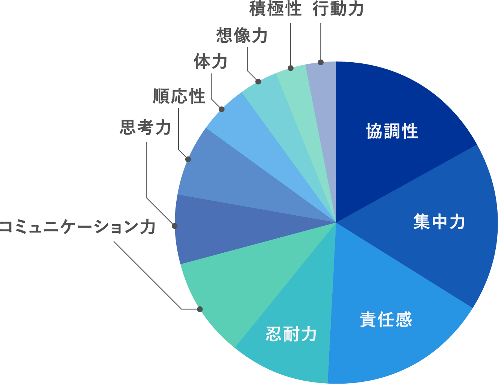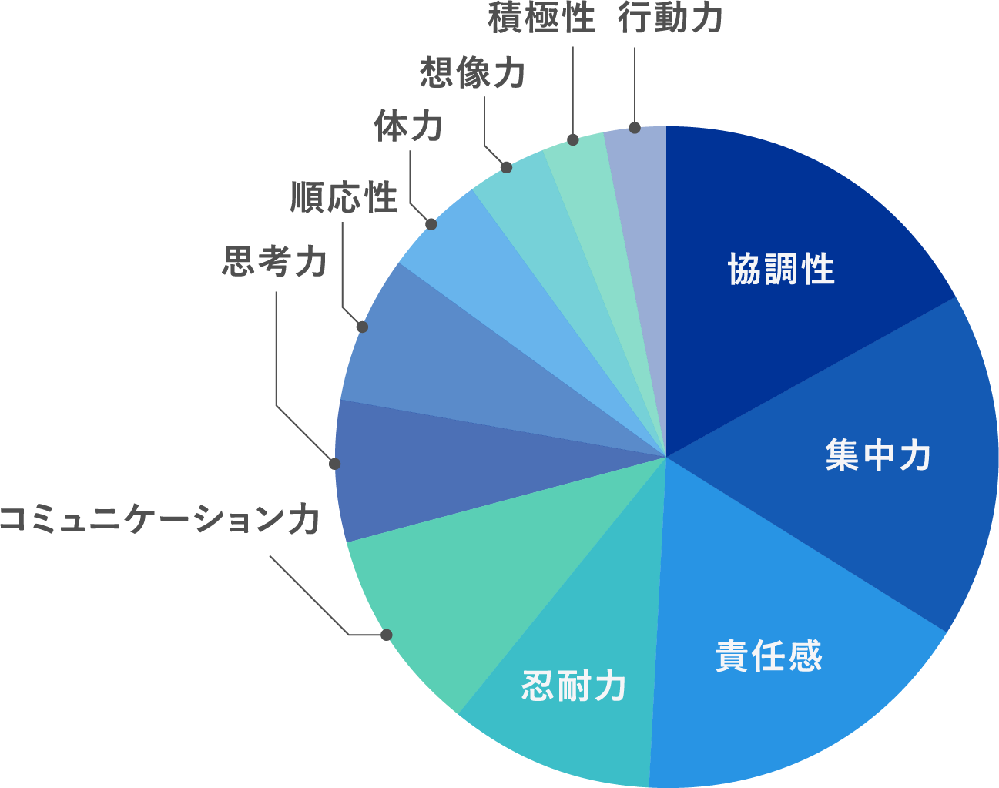
チームで仕事を進めるうえで、重要な「協調性」、一心に取り組み「集中力」が上位を占めました。
あなたが目指す
ホクデン社員ってどんな人？
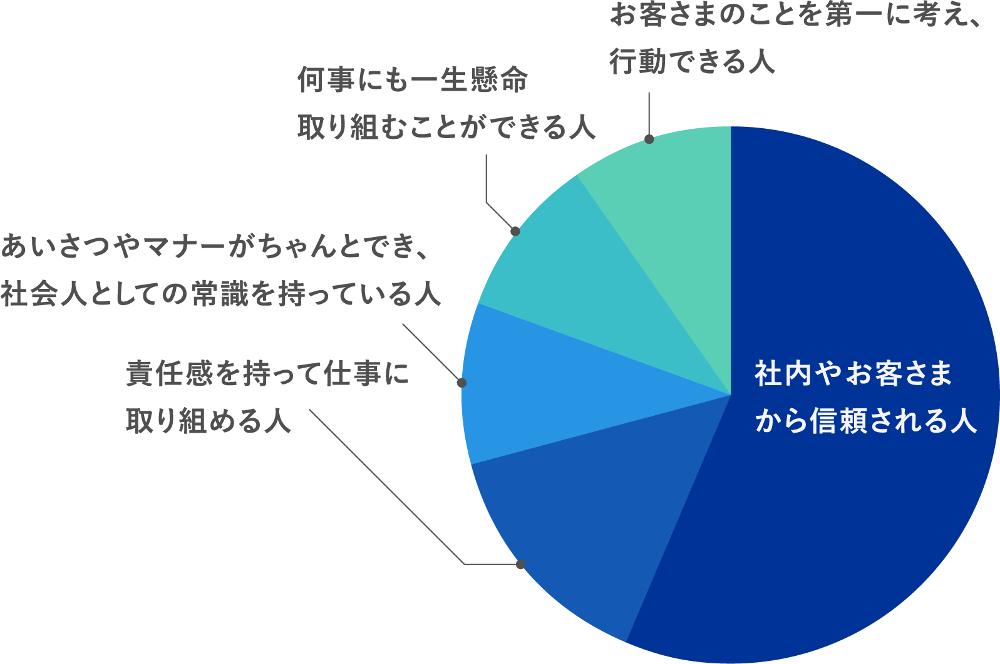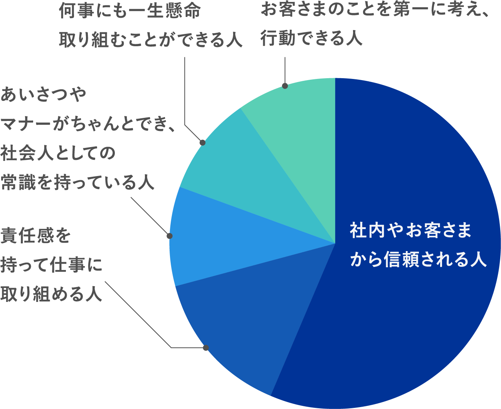
回答の約4割に「信頼」という言葉がありました。
初任給は何に使った？
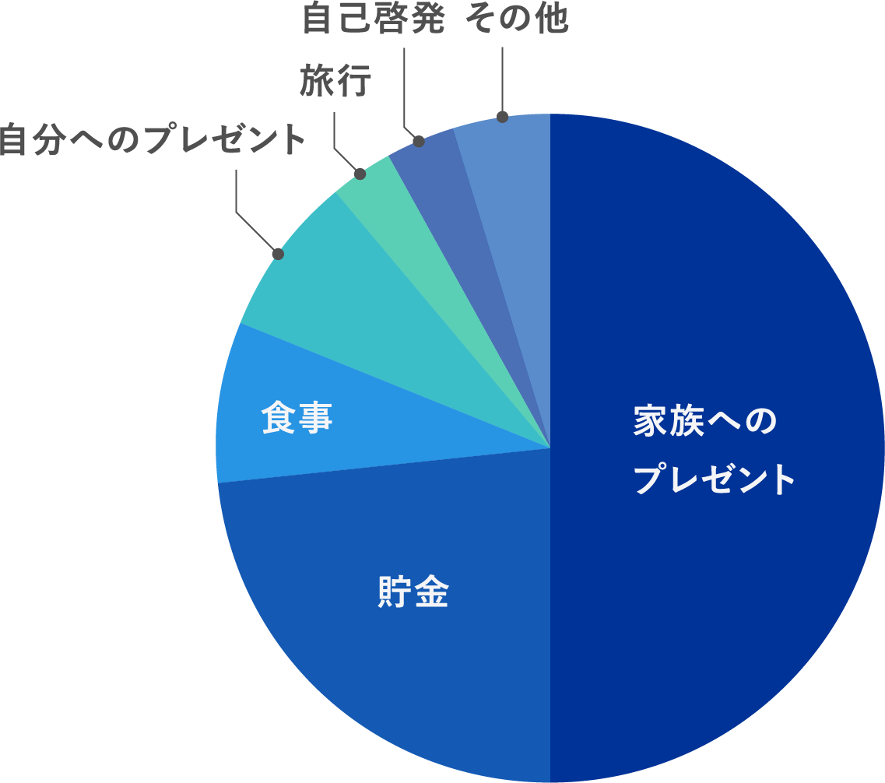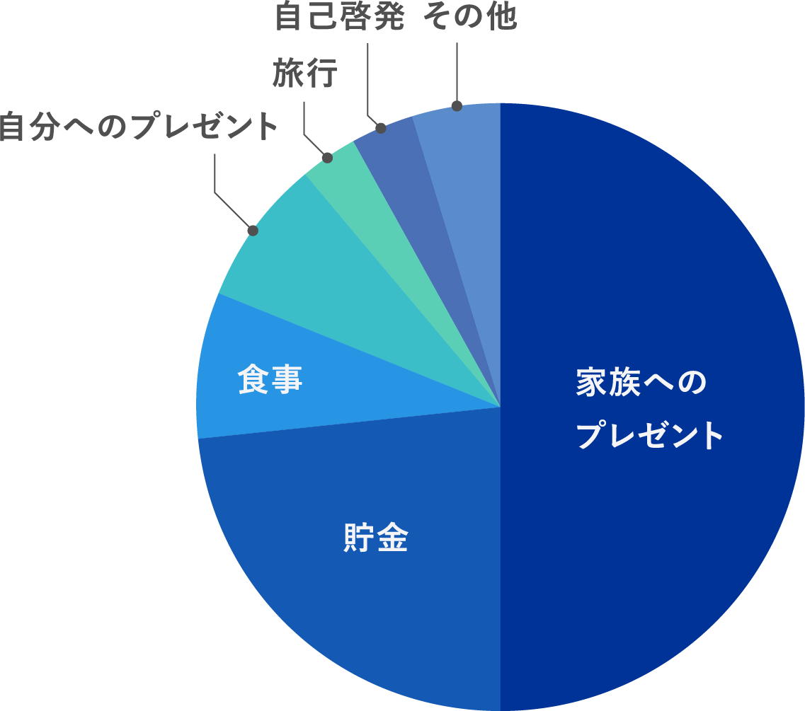
これまでお世話になった「家族へのプレゼント」が半数にのぼりました。
社会人になって
チャレンジしたいことは？
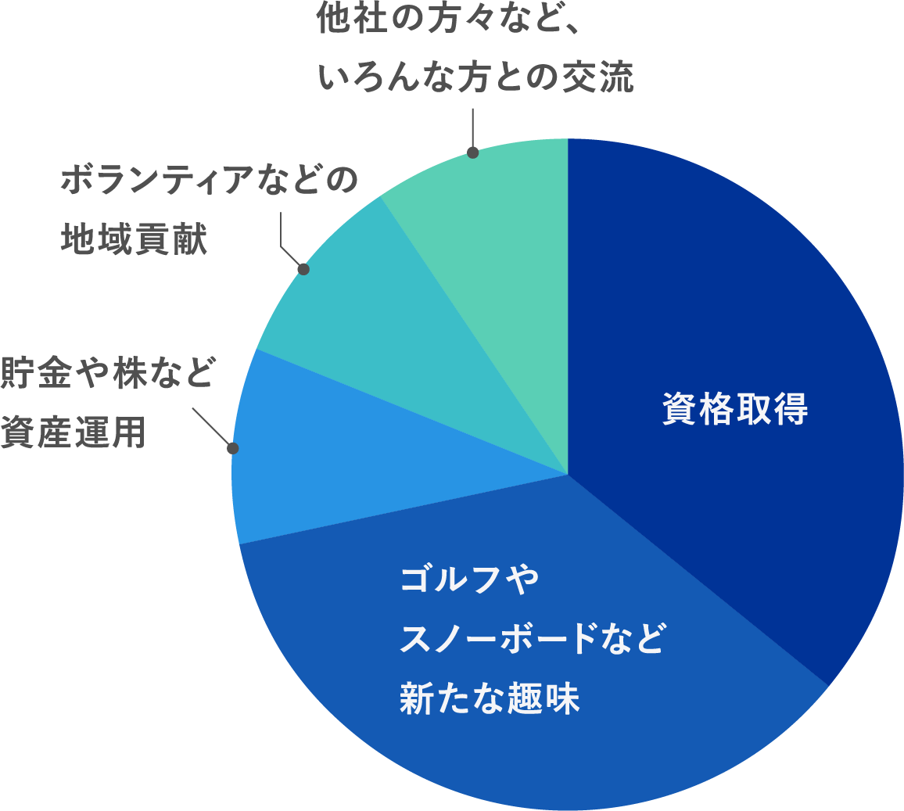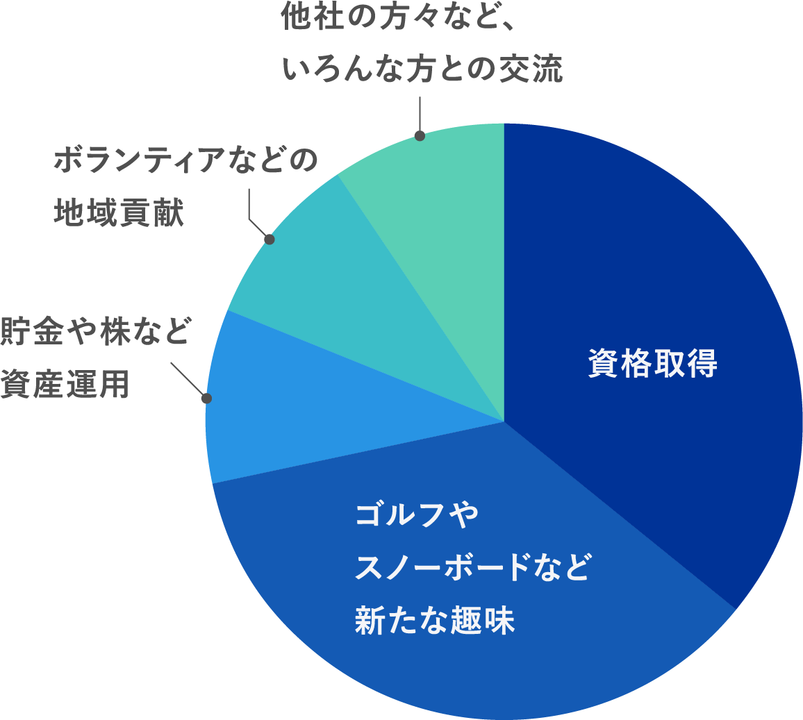
ゴルフなど学生では金銭的になかなか手が出せなかったスポーツに挑戦したいというところに新入社員らしさが感じられます。また「とにかく、いろいろなことにチャレンジしたい」という意見も多くありました。
今後の目標は？
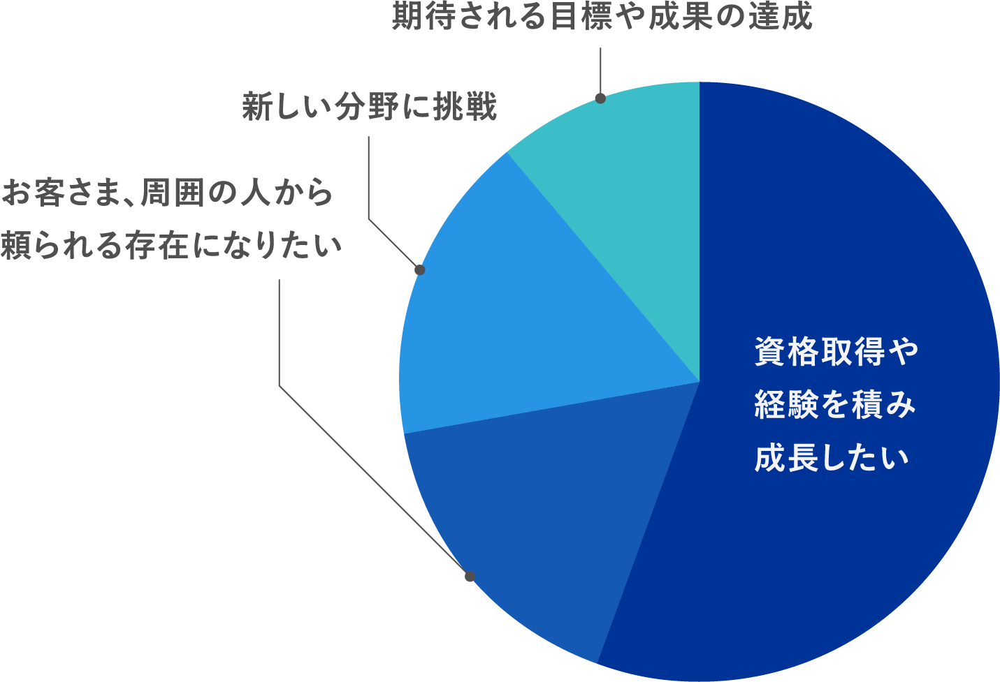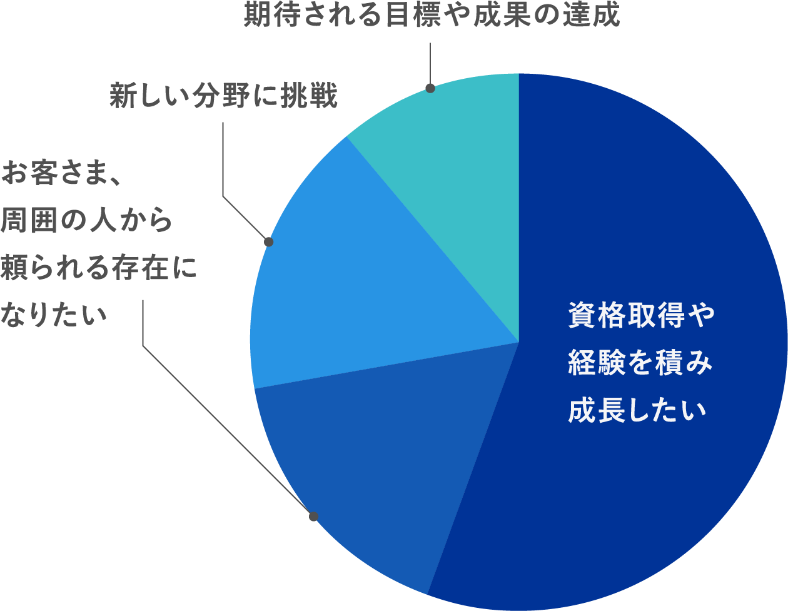
多くの社員が経験を積んでいきたいと答えるとともに仕事に必要な資格を取得したいと答えました。また仕事を通してお客さまや会社内外において頼りにされる存在になりたいと答えた社員も多くいました。その他には新しい技術分野への挑戦や大きなプロジェクトに参加してみたい、自分なりに新しいやり方でお客さまへアプローチしたいなど、積極的な意見もありました。
新入社員の回答紹介
-
- 第1に、自身で業務管理を適切に行い先をみて動ける社会人になることです。優先順位付けを行い、能動的に業務に取組んでいくことを目指します。第2に、専門知識をしっかり身につけることです。資格試験の受験や専門書の購読を通じて、学んだことを自身の知識として定着させていきたいと思います。
- 幅広い視点でものごとを考えられるようになること、今の部署にて成果をあげることを目標にしています。
- 資格取得や語学勉強などを通してスキルアップを目指しています。
-
- まずは、一日でも早く一人前になることです。そして、新しい事業などに積極的に挑戦し、今後の北陸電力を支えていけるような社員を目指したいと思っています。
- 基本業務を身に付け、いち早く北陸の人々の生活を「電気」を通して支えていけるような技術者になりたいと思っています。
- まずはしっかりと仕事を覚えて、同じ部署で働く方々をサポート出来るようになることを目標としています。さらに将来的には、自分で仕事を創り、より主体的に業務に取り組んでいけるようになりたいと思います。